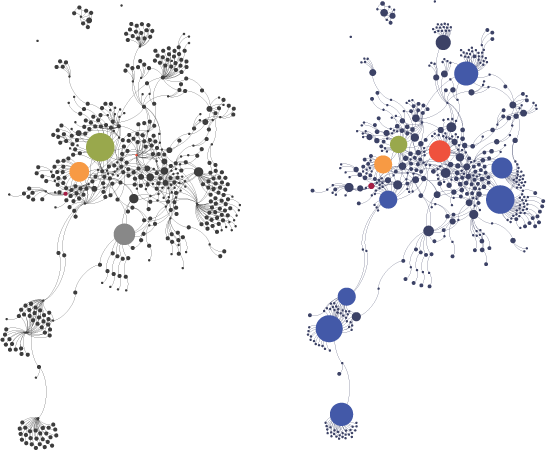

In preparation for tomorrow’s Introduction to Gephi Workshop, I’ve put up a PDF of the short presentation up. The full workshop will focus on hands-on use of Gephi with examples of spigots and filters and analytics and all the rest of the features that this toolkit can provide to scholars.
I’m also happy to be able to point to an excellent overview of network representation and analysis from a humanities perspective as developed by Molly Wilson, a graduate student in Stanford’s Learning, Design and Technology program. This overview should serve as both an introduction and a caution to those interested in using tools like Gephi in humanities research.